第 5 部分：功能通信要求和装置模型
0. 引言
IEC 61850
- 为了实现变电站内所有装置间的互操作
- 变电站内所有装置间的通信应满足变电站中所完成全部功能的要求
- 系列标准总则、要求规范和建模等部分与任何实现无关
第5部分
变电站功能的通信要求和装置模型
通信模型
- 对象（如，数据对象、数据集、报告控制、登录控制）
- 对象提供的服务（取数、设定、报告、创建、删除）
标准的一般结构：
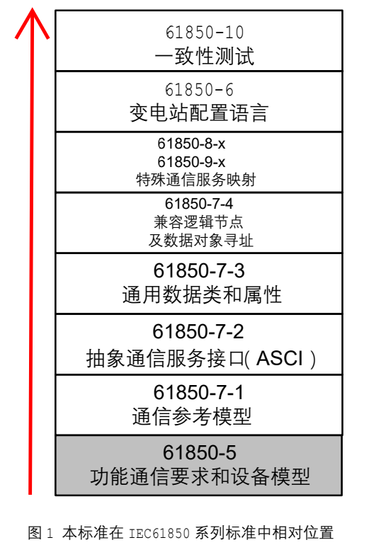
1. 范围
- 本标准适用于变电站自动化系统（SAS），规定了智能电子设备之间的通信和相关系统要求
- 本标准规定了变电站自动化系统所完成功能的通信要求和装置模型。
- 功能的描述并不是用于功能标准化而是用于标识技术服务和变电站之间、变电站内智能电子设备 （IED）之间的通信要求。==只为了标示通信要求==
- 为支持功能自由分配要求，定义了将功能分解为相关通信部分的方法，规定了交换数据和它们的性能要求。
2. 规范性引用文件
pass
3. 术语和定义
内容同 IEC61850-2
3.1 功能 function
- 由变电站自动化系统执行的任务称之为功能
- 一个功能是由若干一些相互交换数据的部分组成，这些部分称之为逻辑节点
- 仅有逻辑节点能交换数据，所以一个同其他功能交换数据的功能必然至少有一个逻辑节点。
3.2 分布功能 distributed function
- 由位于不同物理装置上的两个或多个逻辑节点完成一个功能
- 在一个逻辑节点，或一个有关通信连接的逻辑节点不能正常工作时，功能可能被完全闭锁，如果合适，功能有较大可能降级
3.3 系统 system
- 执行共同功能的一组交互实体，它的中枢是某种通信机制
3.3.1 逻辑系统 logical system
- （通过逻辑节点）完成某种整体任务的全部应用功能的通信集
- 比如，变电站管理
3.3.2 物理系统 physical system
- 承载这些功能与互连物理通信网络所有设备的交互集。
- 系统的边界由其逻辑或物理接口给定。
- 物理系统的中枢是其通信系统
- 例如工业系统，管理系统，信息系统，以及在IEC 61850系列范围内的变电站自动化系统
3.3.3 变电站自动化系统 substation sutomation system
- 主要系统为运行，保护，监视变电站的系统
- 它使用全数字技术和串行通讯连接（通讯系统）。
3.3.4 一次系统 primary system
- 所有电力系统设备和开关设备
3.3.5 二次系统 secondary system
- 变电站中，用于运行、保护和监视一次系统的所有装置和系统的交互集
- 对全数字化技术应用情况， 二次系统是变电站自动化系统的同义语
3.3.6 通讯系统 communication system
- 所有通信链接的互连集
3.4 装置 device
- 为实现某一用途或完成某一功能而设计的设备部件
- 在适当的设备相关模型中描述了与通信相关的属性
- 例如：断路器、继电器，或者变电站计算机
3.4.1 智能电子设备（IED）intelligent electronic device
- 由一个或多个处理器构成，且有能力接收外部资源和（或）向外部资源发送数据和（或）控制命令的装置
- 智能电子设备 IED 是一个在一定 范围内，接口限定的条件下，能够完成一个或多个特定逻辑节点任务的实体。
- 如，电子多功能仪表、数字式继电器、控制器等。
3.4.2 物理装置（PD）physical device
- 在本系列标准中，物理装置等同于智能电子设备。
3.5 逻辑节点（LN）logical node
- 逻辑节点是交换数据功能的最小部分，代表物理装置内的某项功能；或执行这一功能的某些操作。
- 逻辑节点是一个由数据和方法定义的对象
- 与一次设备相关的逻辑节点不是一次设备本身，而是它的智能部分或者是它在二次系统中的映象，
- 例如，本地或远方 I/O 单元，智能传感器和执行器等。
3.6 连接 connection
- 实体间的链路
3.6.1 逻辑连接（LC） logical connection
- 逻辑节点之间的通信连接
3.6.2 物理连接（PC）physical connection
- 物理装置之间的通信连接
3.7 互换性 interchangeability
- 互换性指的是一种可以用同一厂家或不同厂家的装置进行替换
- 互换装置具有相同的通信接口且至少提供相同功能，并且互换对系统的其它部分没有影响
- 若功能差异可接受，互换也可能要求系统某处作出改变
- 本标准不讨论功能和装置的标准化
3.8 互操作性 interoperability
- 互操作性是指同一厂家或不同厂家的两个或多个智能电子设备具有交换信息并使用这些信息进行正确协同操作的能力
- 互操作性是互换性的先决条件
3.9 通信信息片 PICOM
- PICOM 通信信息片（Piece of Information for COMmunication）描述两个逻辑节点间、给定逻辑连接且具有给定通信属性的信息交换
- PICOM 也包含待传输的信息和要求的属性，但并不表示在通信网络上传输的数据的实际结构和格式
- 逻辑点对点连接描述的是交换信息的源和目的地，而不是规定通信过程，因而多播和广播通信过程未排除在外
- 详细可见 IEC61850-8 和 IEC61850-9 中查询到
3.10 间隔 bay
变电站中紧密连接的，具有某些共同功能的部分，这些部分通常包含一个受保护的设备
间隔的识别区分对于维修（哪些部分断开同时对变电站其余部分影响最小）以及扩展计划（如 果增加一条新线路，哪些部分须增加）非常重要
由“间隔控制器”和 “间隔保护”的装置管理
这些装置的功能代表了整个变电站层下的附加逻辑控制层，称之为“间隔层”
但是物理上，间隔层并不必须存在于任何变电站，也就是说，可能完全没有“间隔控制器”这样物理装置。
例如：进线或者出线与母线之间的开关设备；由断路器、隔离刀闸及接地刀闸组成的母线连接设备；在两个不同电压等级母线之间的变压器及其相关开关设备； 2 1 1 接线中串；环型接线（断路器和两侧刀闸）中的虚拟间隔等。这些部分通常包含一个受保护 的设备，如变压器或末端线路，其中开关设备的控制，具有某些共同的约束条件，如联锁或者明确定义 的操作序列。
3.11 串 diameter
该术语用于 3/2 接线。一个串指两条母线间一个完整的开关间隔，即 2 条线路和 3 个断路器和相关 隔离刀闸、地刀，电流互感器和电压互感器。对于操作、维护和扩展，串具有某些共同的功能关系。
3.12 功能层功能 level functions
- 与变电站自动化系统某些控制层有关的功能。
3.12.1 间隔层功能 bay level functions
- 那些主要使用间隔数据，作用于间隔内一次设备的功能
- 间隔功能的定义考虑了变电站一次结构中某种有意义的子结构（参见 3.10）；和有关这种子结构，二次系统中（变电站自动化）的某些局部功能或自动化（变电站自动化）
- 这样一些功能如线路保护、间隔控制。它们在间隔层内，经逻辑接口 3 通信，经逻辑==接口 4== 和 ==接口5== 与过程层，即与远方 I/O，智能传感器和控制器通信。
3.12.2 过程层功能 process level function
- 与过程接口相关的所有功能，基本状态量和模拟量输入输出功能
- 过程层功能经逻辑==接口 4== 和==接口 5==与间隔层通信。
- 如，数据采集（包括采样）、发出控制命令
3.12.3 变电站层功能 station level functions
变电站层功能将变电站看作一个整体，分为过程有关变电站层功能 和 接口有关变电站层功能的两类变电站层功能。
3.12.4 过程有关变电站层功能 process related station level functions
- 使用一个以上的间隔数据或整个变电站数据，控制一个以上间隔的一次设备或整个变电站
- 主要经==接口 8== 通信
- 实例有：站级联锁、顺控、母线保护
3.12.5 接口有关变电站层功能 interface related substation level functions
- 表示变电站自动化系统 SAS 与就地变电站运行人员人机接口HMI (Human Machine Interface)、与远方控制中心接口TCI (telecontrol interface) 或与远方监视和维护工程师办公接口 TMI (telemonitoring interface)等功能
- 通过==接口1==和==接口6==与间隔层通讯
- 通过==接口7==和远方控制接口与外部接口通讯
- 逻辑上，本地或远方人机接口并没有差别
- 在变电站中，在变电站边界至少存在一个虚拟接口。对于 TCI 和 TMI 也同样。这些虚拟接口在某些实现中可 能作为代理服务器。（用来实现远程控制）
4. 缩写
| 缩写 | 英文 | 中文 |
|---|---|---|
| GPS | Global Positioning System (time source) | 全球定位系统（时间源） |
| HMI | Human Machine Interface | 人机接口 |
| I/O | Input and Output contacts or channels (depending on context) | 输入/输出接点或通道（取决于具体内容） |
| IED | Intelligent Electronic Device | 智能电子设备 |
| IF | (Serial) Interface | 串行）接口 |
| LAN | Local Area Network | 局域网 |
| LC | Logical Connection | 逻辑连接 |
| LN | Logical Node | 逻辑节点 |
| MMS | Manufacturing Message Specification | 制造报文规范 |
| NCC | Network Control Center | 电网控制中心 |
| OSI | Open System Interconnection | 开放式系统互连 |
| PC | Physical Connection | 物理连接 |
| PD | Physical Device | 物理装置 |
| PICOM | Piece of Information for COMmunication | 通信信息片 |
| SAS | Substation Automation System | 变电站自动化系统 |
| TCI | TeleControl Interface (for example, to NCC) | 远动接口（如，电网控制中心） |
| TMI | TeleMonitoring Interface (for example, to engineers workplace) | 远方监视/维护接口（如，工程师办公地） |
| FC | Functional constraints | 功能限制 |
5. 变电站自动化系统的功能
5.1 概述
- 变电站自动化系统（SAS）的功能指必须在变电站执行的任务
- 完成变电站的设备及其馈线监视、控制、保护
- 一些变电站自动化系统维护功能，即系统配置、通信管理或软件管理等功能。
5.2 功能和接口的逻辑分配
- 功能逻辑可以分配在三个不同的层面上（变电站层，变电站层、间隔层 / 单元层、过程层），层和接口如下图
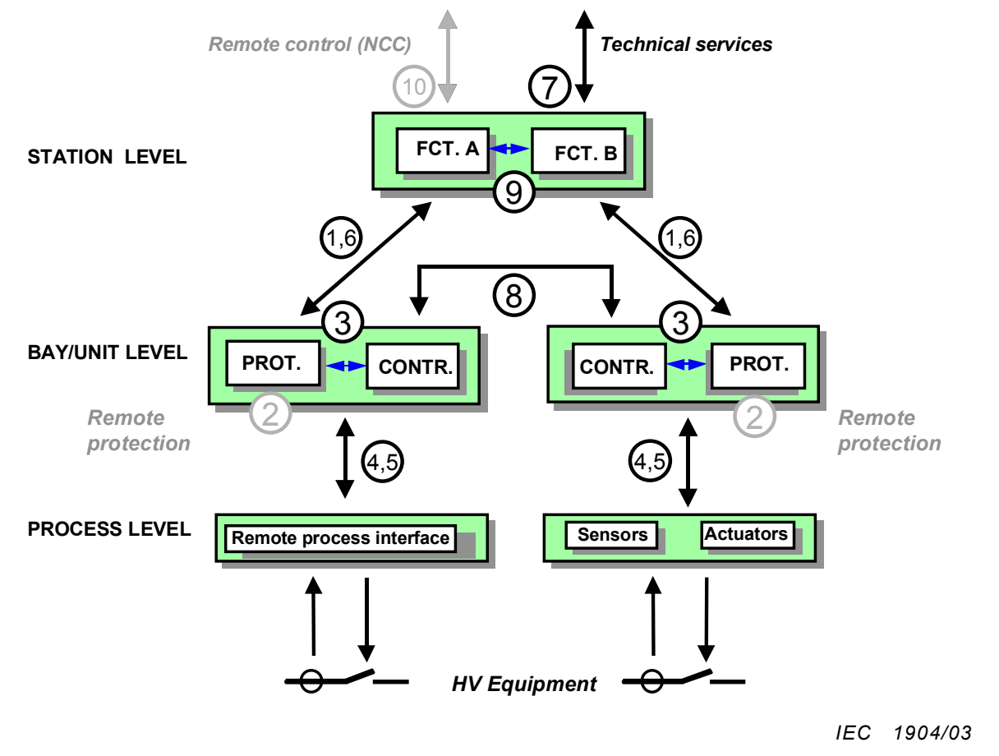
接口含义：
IF1 : 间隔层和变电站层之间保护数据交换
IF2 : 间隔层与远方保护（不在本标准范围）之间保护数据交换
IF3 : 间隔层内数据交换
IF4 : 过程层和间隔层之间电压互感器 PT 和电流互感器 CT 瞬时数据交换（尤其是采样）
IF5 : 过程层和间隔层之间控制数据交换；
IF6 : 间隔和变电站层之间控制数据交换；
IF7 : 变电站层与远方工程师办公地数据交换；
IF8 : 间隔之间直接数据交换（快速功能）；
IF9 : 变电站层内数据交换；
IF10 : 变电站（装置）和远方控制中心之间控制数据交换（不在本标准范围）
过程层和间隔层部分功能可能集成在一个装置中，没有物理上分离
- 变电站自动化系统的装置可能安装在三个不同的功能层上（变电站层、间隔层和过程层）
- 过程层装置典型是远方过程接口，如与过程总线连接的 I/O、智能传感器和控制器。如图 2
- 间隔层装置由间隔内控制、保护和监视单元构成
- 变电站层装置由配有数据库的站级计算机、操作场所、远方通信接口等组成。
5.3 功能和接口的物理分配
尽管逻辑和物理层面相似，但是没有将逻辑功能结构映射到物理设备结构的唯一方法
站级的计算机可能作为客户机，仅具有人机接口、远方控制接口和远方监视接口等基本功能。所有其它的站级功能可能完全分布在间隔层的装置上。在这种情况下，接口 8 就是系统的主干。另一方面， 像全站范围联锁等所有站层的功能可能放在站级计算机中，既作为客户端又作为服务器。这样，接口 1 和 6 接替接口 8 的所有功能。实际上，也存在着许多其它可能解决方案。
间隔层的功能可能由专门的间隔层装置（保护单元、控制单元，有或无冗余配置）完成，或者由保护和控制组合单元完成。某些功能可能由功能自由分配支持，物理上下移到过程层。
若没有串行接口 4 和 5，则由间隔层装置实现过程层功能。串行接口 4 和 5 实现仅包含远方 I/O 装 置功能，即智能传感器和控制器，过程层上已提供某些间隔层功能。
逻辑接口可能作为专用物理接口实现，2 个或多个逻辑接口也可组合形成一个公用物理接口。另外， 这些接口可能组合形成一个或多个物理局域网络。对这些物理接口的要求依赖于功能如何分布到层和各个装置。
5.4 接口的任务
- 变电站并不必须具备所有接口，接口编号有助于确定变电站所需要的接口类型以及数据流计算
- 众多接口允许方便地定义两个重要的局域网或总线系统
- 接口 1、6、3、9、8 组合成变电站/间隔内总线，连接变电站层与间隔层以及不同的间隔
- 接口 4、5 组合成过程总线，它连接间隔层 与过程层以及不同过程层的 IED。过程总线常仅限定在单个间隔。
- 如果过程总线扩展到多个间隔，它可 接替控制接口 8 的任务，至少提供原始数据
- 基于通信性能要求的报文类型可能分布在不同的接口中
6. 目标和要求
6.1 互操作性 Interoperability
- 对于来自不同制造商的装置，互操作性考虑下列几个方面
- 装置应可使用通用的协议连接到通用的总线上（句法理解）
- 装置应理解别的装置提供的信息（语义理解）
- 若有要求（分布功能），装置应共同完成公共的或相互关联的功能
- 还应满足一些静态设计要求和动态交互要求
6.2 静态设计要求 Static design requirements
系统结构设计要求
- 通信应支持功能自由分配到装置上；通信不限制特定设备，而设备也不必全部实现功能
- 变电站自动化系统（SAS）的功能及其通信行为应独立于设备进行描述
- 仅应在识别要交换的信息时对功能进行描述
- 设备无关的分布式功能的交互应通过它们之间的逻辑接口来描述， 这些逻辑接口可以自由分配给物理接口或LAN
- 满足现有的功能和通信要求，并保持对新需求开放
6.3 动态交互要求 Dynamic interaction requirements
通信信息内容要求
- IEC 61850 标准应定义待传输的通用信息，定义支持变电站自动化系统已有功能和未来扩展功能的通信性能，给出功能扩展准则
- 信息交换数据应同所有相关属性一起定义（参见 PICOM）
- 被交换的数据应携带全部属性以便数据接收者明确理解；
- 应定义和保证在各种情况下，被交换数据整体传输时间是可以接受的。
6.4 响应行为要求 Response behavior requirements
接收节点中应用的响应要求
- 接收节点的反应必须满足所执行的分布功能整体要求
- 在任何降级的情况下（发生错误消息的情况下），必须指定功能的基本行为
- 应提供适当的品质属性，与数据一同传输
6.5 实现互操作性 Approach to interoperability
- 标识和分类变电站执行的功能，清晰地定义数据交换的要求
- 自由分配和分配的功能的互操作性意味着通信实体中功能的适当分解
- 建立适当的数据和通信服务模型（本系列标准第 7 部分），明确地定义这个模型到现代通信协议栈的映射（本系列标准第 8、9 部分）。
6.6 一致性测试要求 Conformance test requirements
- 把装置作为系统的 一个元件，验证其通信性能与 IEC61850 标准互操作性规范的一致性
- 一致性测试定义在 IEC61850 系列标准第 10 部分中给出
7 功能定义规范
要为每一个功能提供一个标识
- 功能说明，包括功能分解成逻辑节点
- 逻辑节点说明，包括相互交换 PICOM 信息
- PICOM 描述，包括其属性
7.1 功能说明
- 功能任务
- 功能启动原则
- 功能结果或影响
- 功能性能
- 功能分解（说明功能怎么使用逻辑节点分解，以及有多少个典型分解集存在。因为通信是基于逻辑节点的，所以这点很重要）
- 与其他功能单元之间的交互
7.2 逻辑节点说明
- 分组（常用的应用领域）
- 简短的功能说明
- 如果可能，IEEE 装置功能的编号（仅用于保护有关的LN）
- IEC61850 文档中用到的缩写
- 功能和逻辑节点的关系（表格）以及功能描述
- 交互的PICOM（表格）
7.3 PICOM说明
提供下列信息（第十章）
- 语法
- 逻辑点对点连接
- 性能要求
- 数据类型
8 功能分类
8.1 系统支持功能
- 网络管理
- 时间同步
- 物理装置自检
8.2 系统配置或维护功能
- 节点标识
- 软件管理
- 配置管理
- 逻辑节点运行模式控制
- 设定
- 测试模式
- 系统安全管理
8.3 运行或控制功能
- 访问安全管理
- 控制
- 指示瞬时变化的操作
- 同期分合（定点分合）
- 参数集切换
- 告警管理
- 事件管理和记录
- 数据检索
- 扰动 / 故障记录检索
8.4 就地过程自动化
- 保护功能（通用）
- 距离保护（保护功能示例）
- 间隔联锁
- 测量、计量和电能质量监视
8.5 分布自动化支持功能
全站范围联锁
分散同期检查
8.6 分布过程自动化功能
- 断路器失灵
- 自适应保护（通用）
- 反向闭锁（示例，自适应保护功能）
- 负荷减载
- 负荷恢复
- 电压和无功功率控制
- 馈线切换和变压器转供
- 自动顺控
9 逻辑节点概念
9.1 逻辑节点和逻辑连接
- 为了实现功能自由分布和分配，所有功能被分解为逻辑节点
- 这些节点可以分布在一个或多个物理装置上
- 存在特殊的逻辑节点来反映物理装置本身，称为LLN0 逻辑节点
- 逻辑节点间通过逻辑连接（LC）相连
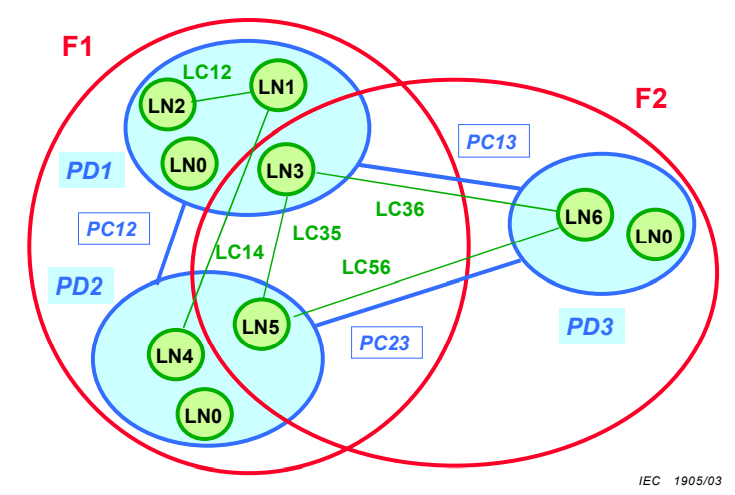
逻辑节点分配给功能（F）和物理装置（PD）。逻辑节点通过逻辑连接（LC）互连， 物理装置则通过物理连接（PC）实现互连。逻辑节点是物理装置的一部分，逻辑连接则是物理连接的一部分。 专用于物理装置的逻辑节点“装置”图示为 LN0（在上图中介绍的逻辑节点四字母编码中，该逻辑节点 记为 LLN0）
9.2 系统形式描述的需要
- 通信系统的静态结构描述数据从哪儿来（发送逻辑节点）到哪儿去（接收逻辑节点），通信系统的静态结构必须在系统建立阶段设计或议定
- 通信管理提供严格的装置和系统形式描述。由本系列标准第 6 部分（IEC61850-6）变电站配置语言规定了这种描述
9.3 逻辑节点行为的要求
- 每个接收LN都应知道需要什么样的数据以完成它的任务（检查数据的完整性，有效性，并具有适当的品质）
- 对于SAS，最重要的有效性准则是数据的时效
- 发送LN是原始数据源，保持着数据的最新值，并设置大部分数据质量属性；接收LN按照相关功能处理这些数据，检查是否过时
- 分布的逻辑节点之间互操作通信要求简化为对可得到或需要的数据标准化，以及第 7 部分（IEC61850-7-X）中定义的适当数据模型中数据有效性属性赋值
- 必须正确定义LN在正常模式和降级模式（数据有错误时）下的行为
- LN的详细建模位于第七部分
9.4 通用功能分解为逻辑节点例子
下图给出了三个例子
- 同期断路器分合
- 距离保护
- 过电流保护
这些功能被分解为若干逻辑节点，所分配的物理装置用编号加以说明
- 变电站计算机
- 同期分合装置（Synchronized switching device）
- 距离保护单元，集成过流保护功能
- 间隔控制单元
- 电流互感器（Current transformer.）
- 电压互感器（Voltage transformer）
- 母线电压互感器（Busbar voltage transformer）
包含在物理装置中的逻辑节点“装置”（LLN0）没有显示出来
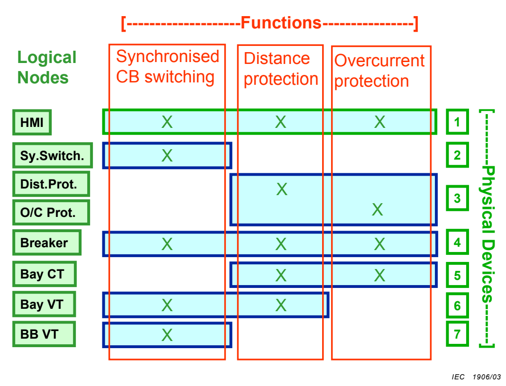
10 PICOM概念
用来描述逻辑节点之间信息交换，说明了交换信息（内容）和通信要求（属性）。PICOM 的各个部分或属性如下：
- 数据，信息内容和功能所用标识（语义）
- 类型，数据的结构
- 性能，即数据允许的传输时间（由性能类定义）、数据的完整性和数据传输的原因和方法（例如： 周期传输、事件驱动、请求发送）
- 逻辑连接，发送LN和接收LN
10.1 PICOM 属性
依据用途分，分为三类
10.1.1 任一报文都要用的 PICOM 属性
| 属性 | 描述 |
|---|---|
| 值 | 信息本身的值。视需要。 |
| 名字 | 数据标识 |
| 源 | 信号发出的逻辑节点 |
| 终点 | 接收信号的逻辑节点 |
| 时间标记 | 标识数据时效的绝对时间。视需要。 |
| 传送优先级 | 用于：1.逻辑节点的输入队列（若多于一个）2.对于中间逻辑节点，逻辑节点输入/输出的重发次序 |
| 时间要求 | 循环时间或整体传输时间，通过时间标记来检查数据有效性。 |
10.1.2 仅在配置时用的PICOM属性
| 属性 | 描述 |
|---|---|
| 传送的值（见 10.1.1） | 测试或缺省值。视需要。 |
| 传送属性（见 10.1.1） | |
| 精度 | 类或值 |
| 信息标记 | 时间标记或元时间标记（绝大多数数据使用时间标记以便有效性检查） |
| 类型 | 模拟量、开关量、文件等 |
| 种类 | 告警、事件、状态、命令等 |
| 重要性 | 高、中、低 |
| 数据完整性 | 传送数据的重要性，供检验和重传用（详细格式要求见第 14 章） |
10.1.3 仅用于数据流计算的 PICOM 属性
| 属性 | 描述 |
|---|---|
| 传送或配置值（见 10.1.1） | 测试或缺省值。视需要。 |
| 传送或配置属性（见 10.1.1） | |
| 格式 | 数据类型（整数、无符号整数、实数、布尔值、位串、BCD 码等） |
| 长度 | 数据的长度（i 比特，j 字节，k 字） |
| 运行状态 | 参见具体情况 |
10.2 PICOM 和数据模型
- 通过 PICOM 描述的信息交换是基于由逻辑节点提供的数据。通常，这些数据是在源的数据模型中定义的（参见IEC 81850-7-4）
11 逻辑节点列表
大多数功能至少由三个逻辑节点组成：
- 核心功能逻辑节点
- 过程接口逻辑节点
- HMI逻辑节点
例子：保护功能
若谈论某一功能，例如“保护功能”，通常仅指其核心功能
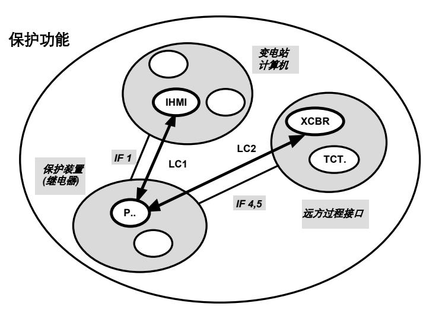
3 个逻辑节点
IHMI，运行人员接口，位于站级计算机P..，保护，位于保护设备XCBR，待跳闸的断路器，位于远方控制接口
逻辑节点类型(头字母作为标识)：A... 自动控制C... 监控G... 通用功能I... 接口和存档L... 系统逻辑M... 计量和测量P... 保护功能R... 保护相关功能S... 传感器和监视T... 仪用互感器X... 开关设备Y... 变压器及相关Z... 其他设备
详细解释可以查看附录的表 H.2
11.1 保护逻辑节点 Logical Nodes for protection functions
11.1.1 保护 Protection
PTEF瞬时接地故障保护PZSU零速和欠速保护PDIS距离保护PVPH每赫兹电压保护PTUV（定时）欠电压保护PDPR方向/反向功率保护PWDE基于功率测量原理的接地补偿系统接地方向故障保护PUCP欠电流/欠功率保护PUEX失励/欠励磁保护PPBR反相或相平衡电流保护PPBV相序或相平衡电压保护PMSU电动机启动保护PTTR过热保护PROL转子热保护PSOL定子热保护PIOC瞬时过流或增量保护PTOC交流定时过流保护PVOC定时过电流保护PPFR功率因数保护PTOV（定时）过电压保护PDOV直流过压保护PVCB电压/电流平衡保护PHIZ接地故障保护/接地检测PREF转子接地保护PSEF定子接地保护PITF匝间故障保护PDOC交流方向过电流保护PDEF方向接地故障保护PDCO直流定时过流保护PPAM相角或失步保护PFRQ频率保护PDIF差动保护PPDF比相保护PLDF线路差动保护PNDF不完全接地保护PTDF变压器差动PBDF母线保护(2)PMDF电动机差动保护(3)PGDF发电机差动保护(3)
保护逻辑节点的通信结构如下
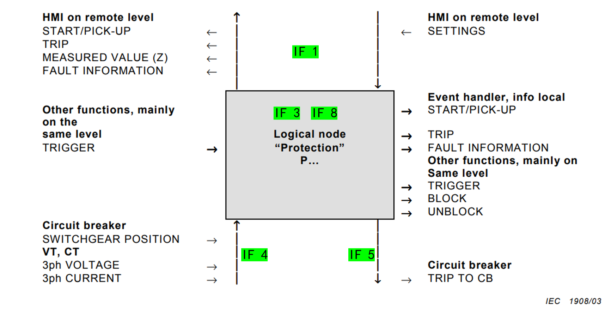
数据和过程（开关设备 XCBR、电流互感器 TCTR、电压互感器 TVTR）相关的通信分别使用接口4（接收）和接口5（发送）
保护LN内部逻辑同层通信使用接口3或接口8
和类似IHMI的逻辑节点通信使用接口1
11.1.2 保护相关逻辑节点 Logical Nodes for protection related functions
RDRE扰动记录（间隔 / 过程层：采集）RDRS扰动记录（变电站层：评估）RREC自动重合闸RBRF断路器失灵RCPW载波或导引线保护RFLO故障定位RSYN同期或同期检查RPSB电网震荡闭锁
11.2 监视控制逻辑节点 Logical Nodes for control
11.2.1 控制 Control
CALH报警处理CSWI开关控制器CPOW定点分合断路器控制器CILO连锁功能（全站 / 间隔层）
11.2.2 接口、日志和存档 Interfaces, logging, and archiving
IHMI操作员接口（间隔层当地控制，变电站层控制）ITCI远方控制接口ITMI远方监视接口IARC存档
11.2.3 自动过程控制 Automatic process control
ATCC自动分接头控制AVCO自动电压控制ARCO无功控制ANCR接地故障补偿控制（消弧线圈控制）AZVT零电压跳闸GAPC自动过程控制（顺控，未知功能等通用可编程逻辑节点）
11.2.4 计量和测量 Metering and measurement
MMXU测量（运行用）MMTR测量（商用）MSQI序值和不平衡（稳定用）MHAI谐波和间谐波（电能质量）
11.3 物理装置
11.3.1 公共标识和性能 Common identification and behavior
LLN0逻辑节点装置- 该逻辑节点包含有物理装置中智能电子设备相关数据，与其所包含所有逻辑节点无关（装置标识/铭牌、装置自检报文等）
- 需要的话，该逻辑节点也用于对物理装置包含的所有逻辑节点共 同的任务（模式设定、整定等）
11.4 系统和装置安全 System and device security
GSAL通用安全应用- 含有违反安全的日志
11.5 一次装备相关逻辑节点 LNs related to primary equipment
- 开关设备有关的逻辑节点代表电网
- 由变电站自动化系统通过输入/输出看到的外部电网
11.5.1 开关装置和变电站部分 Switching devices and substation parts
XCBR逻辑节点“断路器”（包含各种断路器，即能切断短路电流的开关）- 包括具有 / 不具有定点分合能力的断路器
XSWI逻辑节点“开关”（所有不能够断开短路电流的开关种类）- 负荷开关
- 隔离开关
- 接地开关
- 高速接地开关
上述逻辑节点使用上述 开关装置 和相关设备的全部：
- 输入
- 输出
- 在变电站自动化系统(SAS)中的通信相关性能（communication relevant behavior in the SAS）
表示上述设备（断路器 / 开关）
11.5.2 传感器监视逻辑节点 LN for monitoring by sensors
SIMS绝缘介质测量单元（监视绝缘介质，比如空气开关GIS的气体密度，压力，温度等）SARC电弧监视和诊断（GIS有关气体分合电弧等）SPDC局部放电的监控和诊断（GIS局部放电特征）
上述逻辑节点使用上述 传感器 和相关设备的全部：
- 输入
- 在变电站自动化系统(SAS)中的通信相关性能（communication relevant behavior in the SAS）
表示上述设备（传感器）
11.5.3 仪用互感器 Instrument transformers
TCTR电流互感（每项一个实例）TYTR电压互感（每项一个实例）
上述逻辑节点使用上述 互感器 和相关设备的全部：
- 数据
- 相关定值（如果使用的话）
- 在变电站自动化系统(SAS)中的通信相关性能（communication relevant behavior in the SAS）
表示上述设备（电流互感 / 电压互感）
11.5.4 电力变压器 Power transformers
YPTR电力变压器YLTC分接开关YEFN接地故障补偿（消弧线圈）YPSN分流
上述逻辑节点使用上述 变压器 和相关设备的全部：
- 输入
- 输出
- 相关设定值
- 在变电站自动化系统(SAS)中的通信相关性能（communication relevant behavior in the SAS）
表示上述设备（电力变压器）
11.5.5 更多电力设备 Further power system equipment
ZAXN辅助网络ZBAT电池（提供电池数据，控制充放电）ZBSH套管ZCAB电力电缆ZCAP电容器组ZCON转换器ZGEN发电机ZGIL气体绝缘线路（GIL）ZLIN架空电力线ZMOT电动机ZREA电抗器ZRRC旋转无功元件ZSAR浪涌抑制器ZTCF（可控硅控制）频率转换器ZTCR可控硅控制无功元件
上述逻辑节点使用上述 电力设备 的全部：
- 数据
- 相关设定值
- 在变电站自动化系统(SAS)中的通信相关性能（communication relevant behavior in the SAS）
表示上述设备
11.5.6 通用开关设备 Generic process I/O
GGIO通用输入 / 输出（模拟输出、辅助继电器等输出等未定义的IO装置）
11.6 有关系统服务逻辑节点 LNs related to system services
STIM主时钟（为系统的LN提供时间，用来设定或同步）SSYS系统监管（为系统监管启动，收集和处理全部数据的LN）GTES测试信号发生器（使用过程信号启动测试）
12 逻辑节点应用
12.1 基本原理
12.1.1 逻辑节点自由分配
- 公共的层次结构并不约束功能（逻辑节点）的自由分配
12.1.2 变电站层
这些LN表示变电站层
- 包括而不限于
IHMI，CILO，CALH，ATCC等 - 常见
I...，也有A...和C...
12.1.3 间隔层
这些LN表示系统的间隔层控制、自动、测量和保护功能
- 包括而不限于
CILO，ATCC，MMXU，CSWI、PDIS、PZSU、PDOC等 - 常见
P...，C...和A...，也有X...
12.1.4 过程 / 开关层
这些LN代表了电力系统（一次系统），也就是说二次系统通过 I/O 所见的电网
- 使用智能I / O 的话，LN也可以从间隔层下移到过程层
- 常用
Y...，X...和Z...
12.2 基本实例
12.2.1 基本实例1
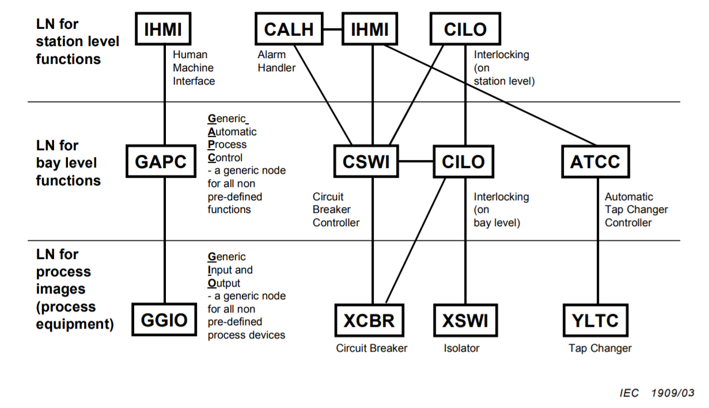
将功能分解成不同层次上交互的逻辑节点：
- 通用自动化功能：
GAPC - 断路器控制功能：
CSWI和CILO - 电压控制功能：
ATCC
12.2.2 基本实例2
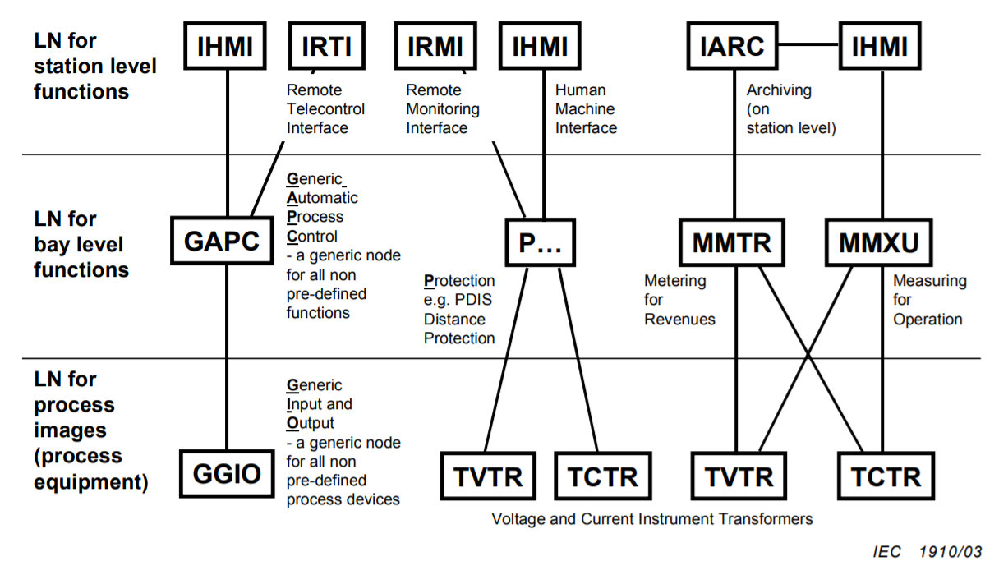
将功能分解成不同层次上交互的逻辑节点：
- 具有远动接口的通用功能：
IRTI和GAPC - 保护功能：
P... - 测量/计量功能：
MMTR和MMXU
12.3 附加实例
12.3.1 附加实例1
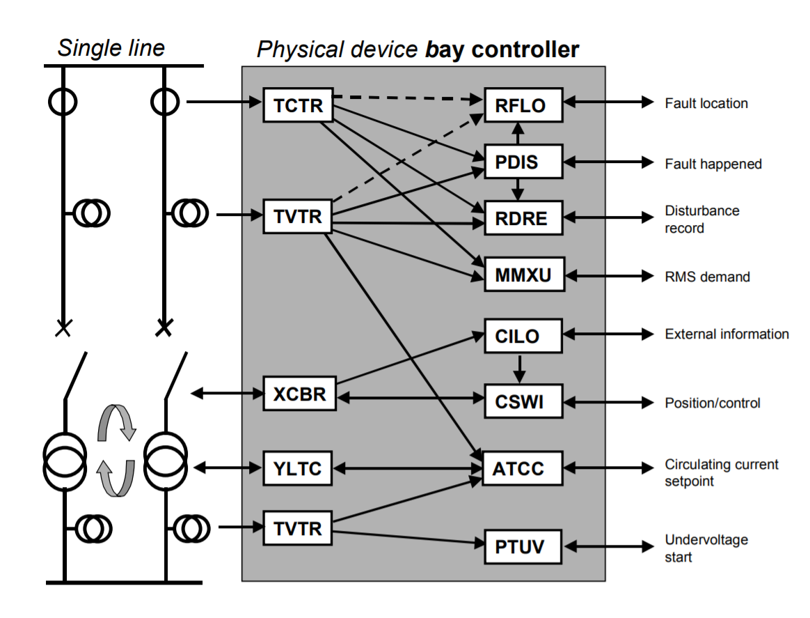
组合在变压器柜中一个物理装备中的控制LN和保护LN
- 控制LN：
ATCC - 保护LN：
PDIS
12.3.2 附加实例2
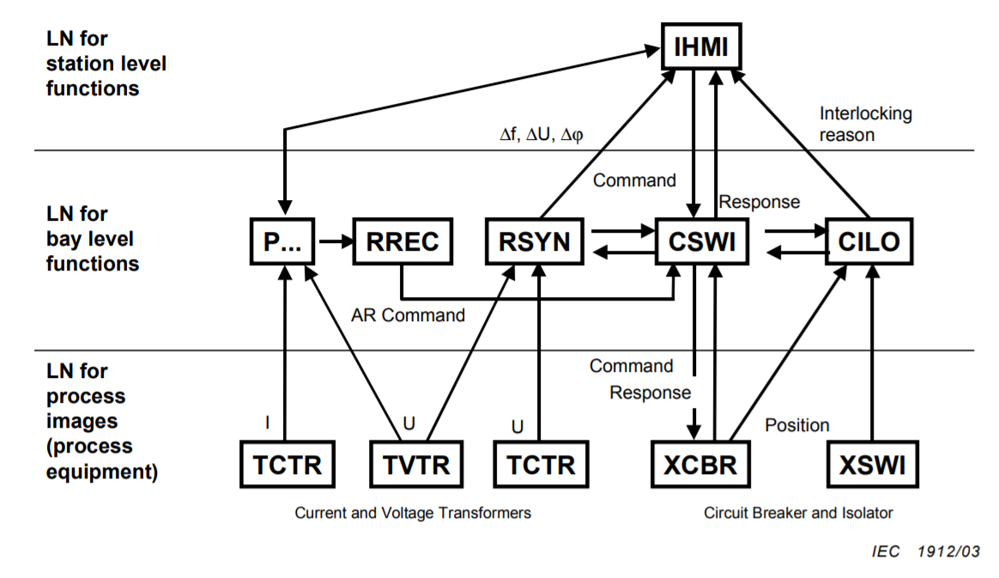
- 开关控制：
CSWI - 联锁：
CILO - 同步检查：
RSYN - 自动重合闸：
RREC - 继电保护：
P...
12.3.3 附加实例3
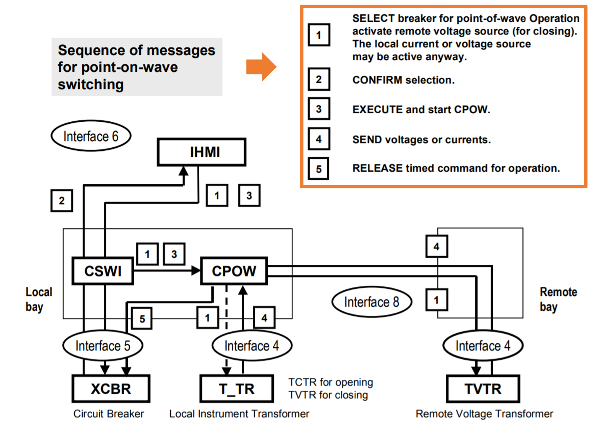
复杂功能如定点分合的 LN（远程或本地）顺序交互的示例
- 开关控制器：
CSWI - 定点分合断路器控制器：
CPOW
12.3.4 附加实例4
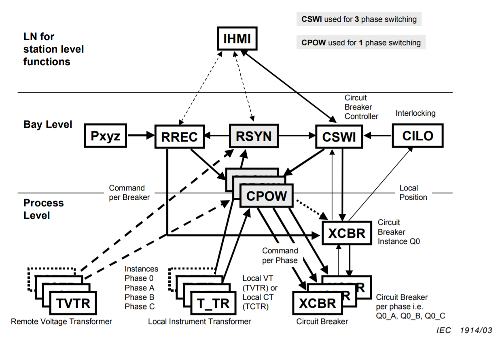
定点分合逻辑节点（本地和远方）功能作用—结构图
- 定点分合逻辑节点：
CPOW - 同期或同期检查：
RSYN
12.3.5 附加实例5
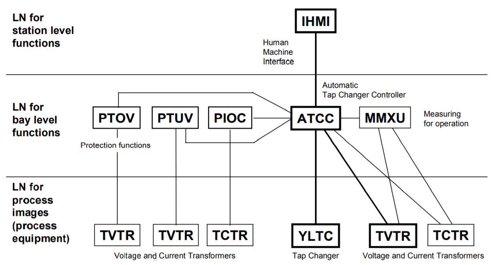
自动调节分接头控制调节电压实例
- 保护功能：
PTOV，PTUV和PIOC分别用于过压，欠压和过流保护 - 相关量测量：
MMXU - 人机接口：
IHMI
12.3.6 附加实例6
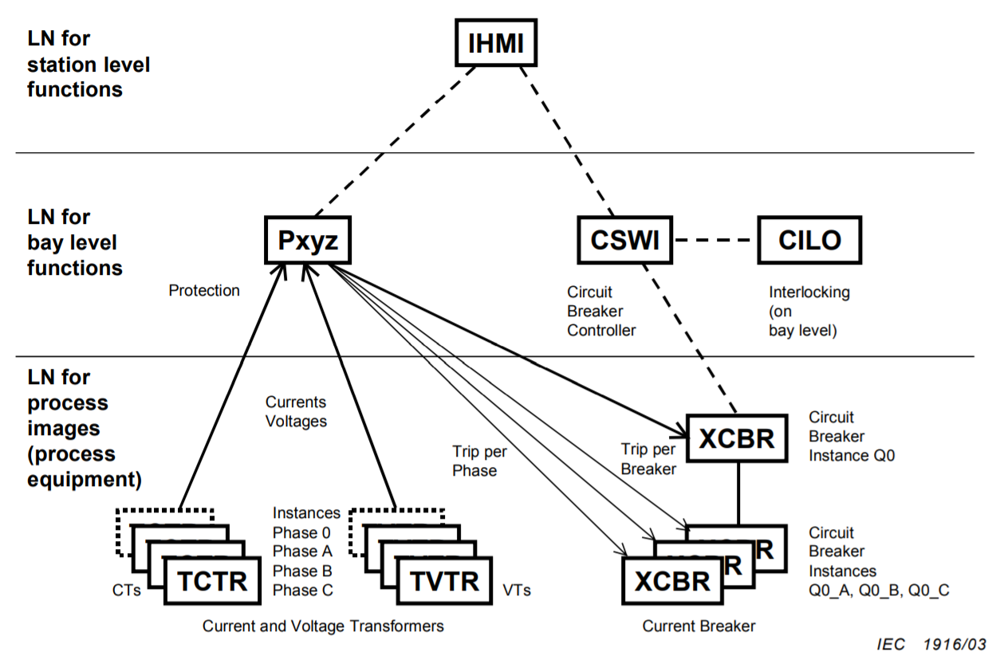
断路器分相控制（每相一个 XCBR 实例）和 带有分相测量单元的互感器（每相一个 TCTR 或 TVTR 实例）
12.3.7 附加实例7
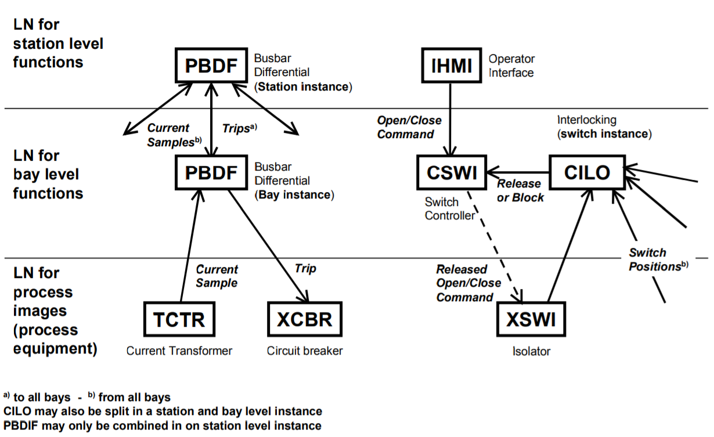
左）分布母差保护（中央单元和分相单元 PBDF 逻辑节点实例）
右）开关间隔中每个开关
断路器联锁（CILO 逻辑节点实例）
12.4 建模注解
- 本系列标准第 7 部分（IEC61850-7-X）定义全部建模实现方法
- 本章节说明本系列标准第 5 和第 7 部分之间关系一些要点
12.4.1 对象类和实例
- 此处描述的LN为所有实现提供了通用功能，即，它们在对象建模方面代表了LN类。
- 在实际的实现中，LN表现为一个个体（单一的标识，要交换的个别数据），即，它们在对象建模方面代表LN实例。
- 来自同一LN类的LN实例可能在设备中出现一次或多次。
个人理解：
就拿开关控制（
CSWI）来讲，既是开关控制类的声明，也是类的实例他是所有开关控制节点的一个概述，不管实际上是怎么实现的，只需要实现基本功能（开/关），所以他就代表了开关控制类的所有情况，代表了开关控制LN类
另一方面，在系统图中，每一个
CSWI都是单独存在的，他们都有不同的物理设备映射，此时他代表了开关控制LN的一个实例
12.4.2 要求和建模
通信要求与任何建模方式无关
12.4.3 逻辑节点和模型
- 从需求出发建模
- 在CS模型中只作为客户出现的LN，比如
IHMIITCI和ITMI，没有数据对象，故无建模要求 - 本系列标准第 7 部分中对逻辑节点进行了分解和组合，这是为更便利地建模，不影响通信要求。
13 报文性能要求
13.1 概述
- 逻辑节点间通信由数千个独立的 PICOM 加以描述，他们之间存在相似之处
- 对PICOM分类可以实现对需求的全面概述，又可以对所请求的通信性能进行强有力的建模和定义
- 根据共同的用途和属性对PICOM进行分类，结果为附录B.2（实现功能分类）
- 使用PICOM最重要的公共属性进行分类分类，结果为B.3（主要功能分类）
- 传输时间要求简化为用最高的传输时间数据表示
- 数据交换的最大允许时间称为”总传输时间”
- 传输时间要求是系统要求，时间标签要求是设备要求，但请参考系统支持功能“时间同步”
- 13.7 中，各种 PICOM 类型分组为 7 种报文类型，其属性范围由性能类建立，给出了对典型应用和接口分配的建议
- 13.5 条介绍了报文类型和用法
- 13.6 条介绍了性能类和其用法
13.2 基本时间需求
IEC61850标准兼容装置所用的事件模型和格式要求规定如下：
- 精度
- 时间标记应基于现有时间标准
- 时间模型应能跟踪闰秒
- 时间模型应提供足够的信息，使得客户无需附加信息
- 时间标记信息应容易从商业可用时间资源中获得，（如，GPS）
- 总的时间模型应包括可计算当地时间的信息
- 时间模型应允许偏离当地时间半小时
- 时间模型应指示夏时制是否有效
- 时间格式至少应持续使用 100 年时间
- 时间格式应紧凑，机器易操作
这些基本时间要求是系统要求，但是系统由装置组成，因此，若需要的话，装置应支持这些要求
13.3 事件时间定义
- 事件为计算结果：立即标记时间
- 事件为状态输入变化：需考虑输入出点抖动过程延时，并进行修正
- 模拟输入变化：需考虑输入电路滤波过程，并进行修正
不必在接收端纠正
13.4 传输时间定义
- 一个报文的完整传输包括收发端必要的处理
- 计时从发送方把数据内容置于其传输栈顶时刻开始，直到接受方从其传输栈中取走数据时结束，所以传输时间将包括各自通信处理器时间加上网络时间，其中有等待时间、路由器与其他网络设备所耗费的时间
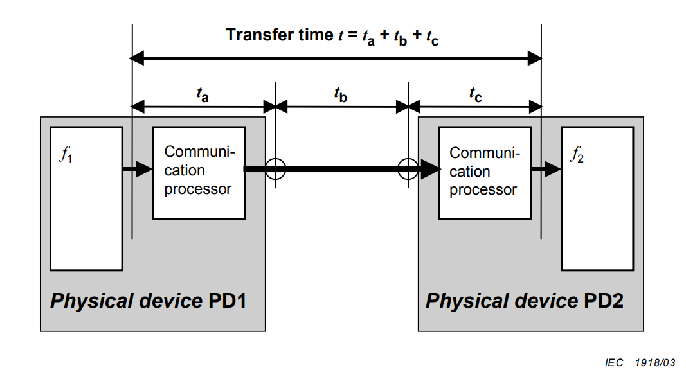
13.5 报文类型介绍和使用
- 因为报文在内容、长度、最坏情况下允许的传输时间以及安全性的要求上各不相同，所以LN之间的PICOM通信会采用多种通信链路来传输各种报文
- PICOM 严格地基于单项专门功能，包括源和目的地信息交换； 报文类型基于与性能相关的PICOM属性的分组，因此，定义了要支持的性能要求
- 性能要求按每个报文定义，与变电站大小无关。
13.6 性能类介绍和使用
为了适应变电站的不同需求，消息类型也细分出了性能类，性能类消息类型又可分为两类：
- 保护和控制
- 计量和电能质量
性能类依据功能要求进行定义，与变电站大小无关
13.6.1 控制与保护
- 性能类==P1==用于配电线间隔或其它要求较低的间隔
- 性能类==P2==用于输电线间隔或用户未另外规定的地方
- 性能类==P3==用于输电线间隔，具备满足同步和断路器分合时间差的最好性能
13.6.2 计量和电能质量
- 性能类 ==M1== 用于具有 0.5 级（IEC62053-22）和 0.2（IEC60044-8）级精度计费计量，最高 5 次谐波
- 性能类 ==M2== 用于具有 0.2 级（IEC62053-22）和 0.1（IEC60044-8）级精度计费计量，最高 13 次谐波
- 性能类 ==M3== 用于电能质量计量，最高 40 次谐波。
13.7 报文类型和性能类
13.7.1 类型1-快速报文
包含数据、命令或简单报文等简单二进制编码。接收IED收到报文后，需要以某种方式立即响应。否则没必要采用快速报文
13.7.1.1 类型1A-“跳闸”
”跳闸“是变电站中最重要的快速报文，与其它快速报文相比，该报文具有较多需求要求
- 性能类==P1==，总传输时间应在半个周期内（10ms）
- 性能类==P2==/==P3==，总传输时间应小于1/4个周期内（3ms）
13.7.1.2 类型1B-“其他”
所有”其它“快速报文对自动化系统与过程相互作用比较重要，但与跳闸报文相比，有较少需求要求
- 性能类 ==P1==，总传输时间应小于等于 100ms
- 性能类 ==P2==/==P3==，总传输时间应在一个周期内，定义 20ms
注：这些是接口 3、接口 5 和接口 8 典型报文。
13.7.2 类型 2-中速报文
- 这类报文产生的时刻非常关键，而传输时间则不那么重要（比如只在意时间戳数据的时候）
- 总传输时间必须小于 100ms
是接口 IF3、IF8 与 IF9 典型报文。
13.7.3 类型 3-低速报文
- 包括了需要时标的复杂报文
- 用于慢速自动控制功能、传输事件记录、读取或改变设定点的值，还有系统数据一般显示
- 总传输时间必须小于 500ms
几乎用于所有接口，至少在用于参数设置，IF1, IF3, IF4, IF5, IF6, IF7, IF8, IF9
13.7.4 类型 4-原始数据报文
- 包含数字化传感器和数字互感器的输出数据
- 数据将包含来自每个IED的连续同步数据流，与来自其他IED的数据交织在一起
- 典型用于 IF4。某些应用中，用于 IF8
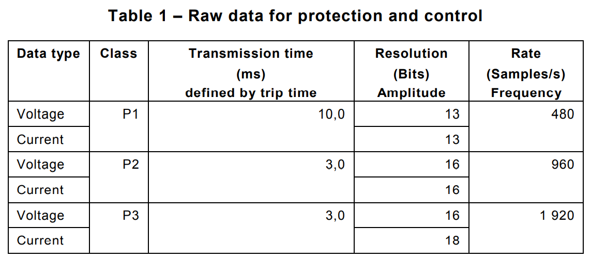
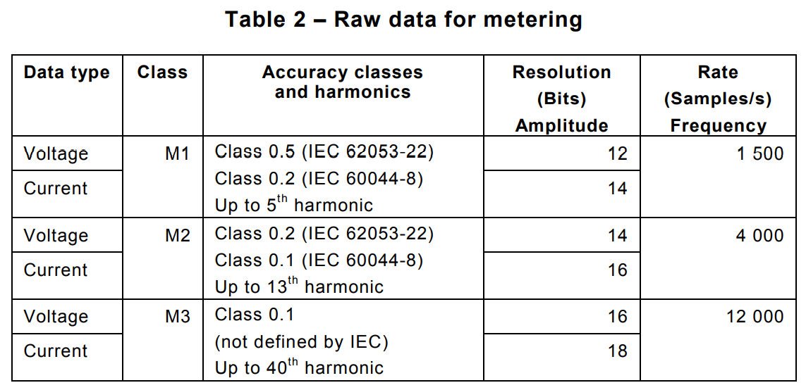
13.7.5 类型5 文件传输功能
- 用于传输，如记录、信息用途数据、定值等大型数据文件
- 数据被分割成限定长度的数据块，PICOM位长典型不小于512位
- 传输时间没有具体限制，一般要求大于等于1000ms
- 对于远程访问，因为有访问控制的存在，所以因该是类型7
13.7.6 类型6 时间同步报文
- 用于同步SAS内IED内部时钟，并根据不同的目的而要求不同级别的时间同步精度
- 具体实现中的精度要求可能要比功能要求高很多
- 除了整个系统的时间准确性外，没有定义对同步消息的直接要求
13.7.6.1 保护和控制事件用标准智能电子设备时间同步
| 时间性能类 | 精度[ms] | 目的 |
|---|---|---|
| T1 | ±1 | 事件时标 |
| T2 | ±0.1 | 用于分布同期的过零和数据时标。支持定点分合时标 |
系统范围时间同步的需要，几乎所有接口使用该类型报文，IF1，IF3，IF4，IF5，IF6，IF7，IF8，IF9
13.7.6.2 互感器用标准智能电子设备 IED 时间同步
| 时间性能类 | 精度[μs] | 引用 | 引用 | 相角 (′） 50Hz | 相角 (′） 60Hz | 故障定位（m） |
|---|---|---|---|---|---|---|
| T3 | ±25 | P1 | 27 | 32 | 7500 | |
| T4 | ±4 | P2 | M1 | 4 | 5 | 1200 |
| T5 | ±1 | P3 | M2 / M3 | 1 | 1 | 300 |
注：性能类 T3、T4 和 T5 一般用于接口 IF4。某些应用中，用于 IF8
13.7.7 类型 7 访问控制命令报文
- 用于传输控制命令，控制命令由要求较高安全性的本地或远程人机接口 HMI 功能发出（接口 7，外部技术服务）
- 基于类型 3，并加上了额外的口令和（或）验证过程，从操作员下传，通过某些控制层传到开关设备，或传到某些受控对象
- 至少在过程层，可能被转换为要求具有类型 1 特征的报文。
- 这些是用于操作员通过本地或远程人机接口 HMI 访问的典型报文。涉及接口 IF1、IF6 与 IF7。
14 数据完整性要求
完整性意指对于给定背景噪声情况下，所产生数据错误小于可接受限值
- 适当设计装置和通信系统，如密封防护和使用光纤连接
- 应用适当编码，如，海明距离
- 至少使用两个步骤顺序，如对命令使用操作前选择（SBO）步骤顺序。
15 系统性能要求
15.1 介绍
- 在设计阶段必须考虑和研究动态性能的要求
- 计算有两种方法
- 基于 PICOM 模型
- 对局域网(LAN)性能的仿真。
15.2 计算方法
略
15.2.1 PICOM方法
15.2.2 局域网仿真方法
15.3 计算结果
15.4 小结
16 数据模型附加要求
为互操作性，数据模型将说明被交换数据的语义和语法。
16.1 逻辑节点寻址要求
- 每个逻辑节点应自身可寻址 （要求）
- 寻址配置将使用分层命名结构和对象数据目录
16.2 数据模型要求
- 所有装置有关功能和可传输数据应提供自我描述
- 人机接口 HMI 所用的信息应可得到 ASCII 文本
- 对明确的装置对装置之间通信，即无运行人员干扰的数据交换，数据（PICOM）标识和属性对装置应是可理解的